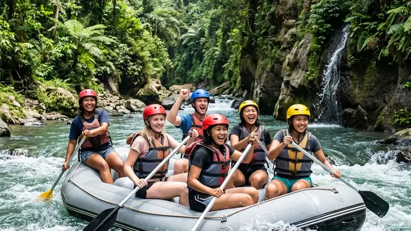

Paket wisata rafting murah adalah paket arung jeram dengan harga terjangkau yang tetap mencakup perlengkapan keselamatan, instruktur berpengalaman, dan asuransi dasar. Panduan ini merangkum kisaran harga, lokasi terbaik, dan cara memilih operator yang aman.
- Paket wisata rafting murah umumnya tersedia mulai kisaran harga menengah ke bawah tergantung jarak lintasan dan fasilitas tambahan
- Kawasan Malang dan Batu memiliki beberapa sungai populer dengan variasi tingkat kesulitan dan harga
- Harga murah tidak selalu berarti mengorbankan keselamatan, asalkan operator memiliki standar SOP yang jelas
- Musim, hari kunjungan, dan jumlah peserta dalam rombongan memengaruhi harga akhir paket
- Memilih operator berlisensi dan berpengalaman tetap menjadi prioritas utama meski memilih paket dengan harga terjangkau
Apa Itu Paket Wisata Rafting Murah?
Paket wisata rafting murah adalah layanan arung jeram yang ditawarkan dengan harga di bawah rata-rata pasar namun tetap menyertakan komponen dasar seperti pelampung, helm, instruktur pendamping, dan dokumentasi sederhana. Paket jenis ini biasanya cocok untuk wisatawan dengan anggaran terbatas, rombongan besar, atau pemula yang ingin mencoba arung jeram tanpa biaya tambahan berlebih.
Secara umum, komponen yang termasuk dalam paket wisata rafting murah mencakup perlengkapan keselamatan standar, jasa instruktur atau pemandu, transportasi dari titik kumpul ke titik start, serta makan ringan atau minuman setelah sesi arung jeram selesai. Beberapa operator menambahkan dokumentasi foto sebagai bagian dari paket standar, sementara operator lain menjadikannya sebagai layanan tambahan berbayar.
Paket ini penting bagi wisatawan yang ingin mengenal aktivitas arung jeram tanpa harus mengeluarkan biaya besar, terutama bagi pelajar, mahasiswa, atau rombongan keluarga yang datang dalam jumlah banyak. Manfaat utamanya adalah aksesibilitas harga yang memungkinkan lebih banyak orang mencoba pengalaman menyusuri sungai dengan tetap memperhatikan aspek keselamatan dasar.
Meski demikian, paket murah memiliki batasan tertentu, seperti jarak lintasan yang lebih pendek, fasilitas tambahan yang terbatas, atau jadwal keberangkatan yang mengikuti jam operasional tertentu. Risiko yang perlu diperhatikan adalah kualitas peralatan dan pengalaman instruktur, sehingga peserta tetap disarankan memeriksa reputasi operator sebelum memutuskan memilih paket dengan harga paling rendah.
Berapa Kisaran Harga Paket Wisata Rafting Murah?
Harga paket wisata rafting murah secara umum dibedakan berdasarkan jarak lintasan sungai, tingkat kesulitan jeram, dan fasilitas tambahan yang disertakan dalam paket.
Menurut data dari beberapa platform pemesanan wisata daring pada 2025, kisaran harga paket arung jeram jarak pendek di kawasan Jawa Timur umumnya berada pada rentang menengah ke bawah, sementara paket jarak menengah hingga panjang dipatok pada harga yang lebih tinggi karena durasi dan tenaga instruktur yang dibutuhkan lebih besar.
Beberapa faktor yang memengaruhi harga paket wisata rafting murah antara lain:
- Jarak lintasan sungai yang ditempuh, semakin panjang lintasan umumnya semakin tinggi biayanya
- Jumlah peserta dalam satu perahu, karena beberapa operator memberikan diskon rombongan
- Hari kunjungan, di mana harga pada akhir pekan atau musim liburan cenderung lebih tinggi dibandingkan hari biasa
- Fasilitas tambahan seperti dokumentasi foto profesional, makan siang, atau transportasi antar-jemput dari kota
- Tingkat kesulitan jeram, karena jalur dengan jeram lebih menantang membutuhkan instruktur dan peralatan tambahan
Untuk mendapatkan harga paling terjangkau, wisatawan disarankan memesan pada hari kerja, dalam rombongan yang cukup besar untuk mendapatkan diskon grup, serta menghindari musim puncak liburan seperti libur sekolah dan tahun baru.
Di Mana Lokasi Rafting Murah Terbaik di Kawasan Malang dan Batu?
Kawasan Malang dan Batu menawarkan beberapa lokasi arung jeram populer dengan variasi harga dan tingkat kesulitan yang dapat disesuaikan dengan anggaran wisatawan.
Sungai Pekalen di kawasan Probolinggo, yang sering menjadi tujuan wisatawan dari Malang, dikenal dengan jalur arung jeram jarak pendek maupun panjang sehingga wisatawan dapat memilih paket sesuai anggaran. Selain itu, Sungai Brantas di kawasan Malang Selatan dan Kasembon juga menjadi pilihan populer karena aksesnya yang relatif dekat dari pusat Kota Malang dan Kota Batu.
Beberapa hal yang perlu diperhatikan saat memilih lokasi rafting murah:
- Jarak tempuh dari titik penginapan atau pusat kota, karena semakin dekat lokasi biasanya biaya transportasi tambahan semakin rendah
- Karakteristik jeram di masing-masing sungai, di mana jalur dengan jeram ringan cenderung lebih cocok untuk pemula dan keluarga
- Musim kunjungan, karena debit air sungai dapat memengaruhi jadwal operasional rafting
- Ketersediaan fasilitas pendukung seperti area parkir, toilet, dan tempat bilas di sekitar lokasi start dan finish
Memilih lokasi yang sesuai dengan pengalaman dan anggaran akan membantu wisatawan mendapatkan paket wisata rafting murah yang tetap nyaman dan aman.
Bagaimana Cara Memilih Paket Wisata Rafting Murah yang Aman?
Cara memilih paket wisata rafting murah yang aman adalah dengan memastikan operator memiliki instruktur berpengalaman, perlengkapan keselamatan standar, dan prosedur keselamatan yang jelas sebelum memilih berdasarkan harga semata.
Beberapa langkah yang dapat dilakukan wisatawan sebelum memesan paket rafting murah:
- Memeriksa ulasan dan reputasi operator dari wisatawan sebelumnya melalui platform daring atau media sosial
- Menanyakan detail perlengkapan keselamatan yang disediakan, termasuk kondisi pelampung dan helm
- Memastikan operator memberikan pengarahan keselamatan atau briefing sebelum memulai perjalanan
- Menghindari operator yang menawarkan harga jauh di bawah rata-rata pasar tanpa penjelasan yang jelas
- Menanyakan rasio instruktur terhadap jumlah peserta dalam satu perahu
Wisatawan juga disarankan untuk mengecek apakah operator memiliki afiliasi dengan asosiasi arung jeram setempat, karena hal ini umumnya menjadi indikator bahwa operator mengikuti standar keselamatan yang berlaku di industri wisata air.
Kesalahan Umum Saat Memilih Paket Wisata Rafting Murah
Kesalahan umum saat memilih paket wisata rafting murah adalah terlalu fokus pada harga termurah tanpa mempertimbangkan aspek keselamatan dan kualitas layanan operator.
Beberapa kesalahan yang sering terjadi antara lain memilih operator tanpa memeriksa ulasan terlebih dahulu, tidak menanyakan detail apa saja yang termasuk dalam paket, serta datang tanpa membawa pakaian ganti atau perlengkapan pribadi yang disarankan. Kesalahan lain adalah tidak mengonfirmasi ulang jadwal keberangkatan, terutama pada musim hujan ketika debit air sungai dapat berubah sewaktu-waktu dan memengaruhi jadwal operasional.
Wisatawan juga terkadang mengabaikan pentingnya kondisi fisik sebelum mengikuti arung jeram, padahal aktivitas ini membutuhkan stamina dan kemampuan dasar berenang atau mengapung di air.
Tips Menghemat Biaya Tanpa Mengurangi Kualitas Pengalaman
Beberapa tips menghemat biaya paket wisata rafting murah tanpa mengorbankan kualitas pengalaman antara lain memesan dalam rombongan besar, memilih hari kunjungan di luar akhir pekan, serta membandingkan beberapa operator sebelum memutuskan.
- Bergabung dengan rombongan lain untuk mendapatkan diskon grup dari operator
- Memesan jauh-jauh hari untuk menghindari kenaikan harga musiman
- Membawa perlengkapan pribadi sendiri seperti pakaian ganti dan sandal agar tidak perlu menyewa tambahan
- Memilih paket tanpa dokumentasi foto profesional apabila anggaran sangat terbatas, karena dokumentasi bisa dilakukan sendiri dengan kamera tahan air
FAQ
Apakah paket wisata rafting murah aman untuk pemula?
Paket wisata rafting murah tetap dapat aman untuk pemula selama operator menyediakan instruktur berpengalaman dan perlengkapan keselamatan standar sesuai prosedur.
Apakah anak-anak boleh mengikuti paket wisata rafting murah?
Sebagian besar operator menetapkan batasan usia minimal untuk peserta rafting, sehingga sebaiknya menanyakan langsung kepada operator terkait batasan usia dan tingkat kesulitan jalur yang tersedia.
Apa saja yang perlu dibawa saat mengikuti paket wisata rafting murah?
Peserta disarankan membawa pakaian ganti, sandal gunung atau sandal jepit, handuk kecil, serta obat pribadi jika diperlukan.
Arya
penulis artikel yang sudah berpengalaman di dalam dunia wisata outbound Batu Malang.